操作手順書（ドライバー用）
業務管理システム ｜ HAUKUR運送 ドライバー様向け ｜ 毎日の稼働入力・写真からの自動入力・支払明細の申請
システムURL：https://react-frontend-beige.vercel.app
ログインID：招待メールが届いたご自身のメールアドレス（パスワードはご自身で設定します）
対応環境：スマートフォン・パソコンのブラウザ（Chrome / Safari 推奨）。アプリのインストールは不要です。
ログインID：招待メールが届いたご自身のメールアドレス（パスワードはご自身で設定します）
対応環境：スマートフォン・パソコンのブラウザ（Chrome / Safari 推奨）。アプリのインストールは不要です。
この手順書の読み方
- ドライバー ＝ ご自身が行う操作です
- こう書いた文字 は画面上のボタン名そのままです
- 画面図はスマートフォンで開いたときのものです。パソコンでも同じ操作ができます
目次
1. このアプリでやること
紙の稼働報告書の代わりに毎日の稼働をスマホで入力すると、月末に支払明細が自動で作られます。
① 招待メールから登録→
② 毎日カレンダーに稼働を入力→
③ 月末に1か月分を確認→
④ 支払明細を申請
| やること | いつ | 章 |
|---|---|---|
| 登録・ログイン | 最初の1回だけ | 2・3 |
| その日の稼働を入力する | 毎日（当日または翌日） | 5・6 |
| 1か月分を見直す | 締日（末日）のあと | 7 |
| 支払明細を申請する | 締日のあと | 8 |
締日は末日、支払いは翌々月10日です。カレンダー・勤怠・支払明細は、締日で区切った1か月で集計します。
入力した内容がそのまま支払いの根拠になります。稼働した日は、その日のうちに入れておくと間違いがありません。
2. 招待メールから登録する
HAUKUR運送から招待メールが届きます。リンクを開いてパスワードを決めるだけで登録は完了です。
STEP 1 招待メールのリンクを開きます（14日以内）。
📧 届くメール 件名：【勤怠アプリ】西野 雄太郎さんから招待が届きました
お名前 様 西野 雄太郎さんが勤怠アプリ（HAUKUR運送）にあなたを招待しました。 下記URLからパスワードを設定して、登録を完了してください（リンクの有効期限: 14日間）。 https://react-frontend-beige.vercel.app/invite/登録用リンク 登録後は https://react-frontend-beige.vercel.app/sign_in から、このメールアドレスと設定したパスワードでログインできます。 ▼ 操作手順書（ドライバー用）（このメールにPDFを添付しています） スマホでそのまま読める Web 版はこちら: https://react-frontend-beige.vercel.app/manuals/haukur_driver.html ▼ トラブル別対応（このメールにPDFを添付しています） スマホでそのまま読める Web 版はこちら: https://react-frontend-beige.vercel.app/manuals/haukur_trouble.html
黄色の部分に、ご自身の名前・メールアドレスが入ります。この手順書と「トラブル別対応」のPDFも添付されています。
「⚠️ 招待リンクが無効です」と出たら期限切れです。同じリンクは使えないため、HAUKUR運送に再送を依頼してください。
STEP 2 表示名を確認し、パスワード（6文字以上）を2か所に入れて 登録を完了する を押します。
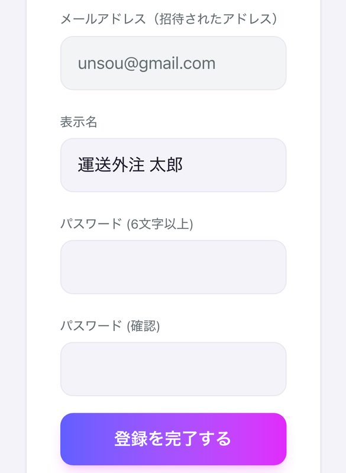
STEP 3 「🎉 登録が完了しました」と出たら アプリをはじめる でカレンダーが開きます。
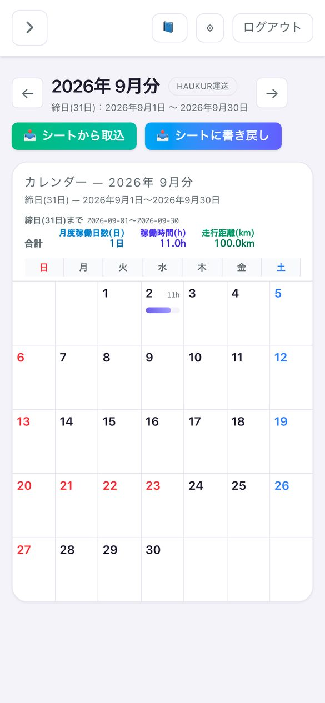
3. ログイン・ログアウト
3-1. ログインする
STEP 1 ブラウザで https://react-frontend-beige.vercel.app を開きます。
STEP 2 登録したメールアドレスとパスワードを入れて サインイン を押します。

STEP 3 カレンダーが開きます。次回も同じURLです。
3-2. ログアウト・ホーム画面に追加
- 画面右上の ログアウト を押すとログイン画面に戻ります。
- iPhoneはSafariの「共有」、AndroidはChromeのメニューから「ホーム画面に追加」でアプリのように使えます。
- パスワードを忘れた場合は再設定画面がありません。HAUKUR運送にご連絡ください。
ログインはメールアドレスとパスワードで行います。Google でログイン は、HAUKUR運送を通じて事前に許可されたアドレスだけが使えます。
4. 画面の構成（メニュー）
画面左（スマホでは左上の ≡）のメニューは次の4つです。
| メニュー | できること | 章 |
|---|---|---|
| 📅 カレンダー | その日の稼働を入力する。写真からメーター・ガソリン代を自動入力 | 5・6 |
| 🕒 勤怠 | 1か月分を表で確認・修正する。支払明細の申請もここから | 7・8 |
| 📄 請求書一覧 | 申請した支払明細の状態（下書き・申請中・承認済）を見る | 8 |
| 📝 契約書 | 署名した業務委託契約書を見る | 9 |
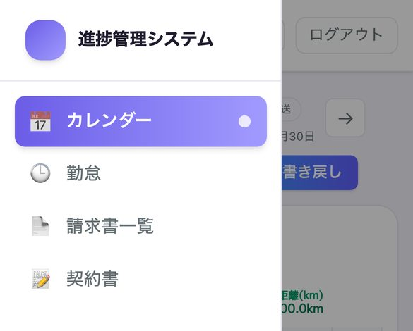
⚙ 設定 ではお名前・振込先などを登録できます。振込先は支払明細に印字されるので、最初に入れておきます。
5. カレンダーで毎日の稼働を入力する
5-1. その日の稼働を入力する
STEP 1 メニューの 📅 カレンダー を開き、日付をタップすると「稼働報告書」が開きます。
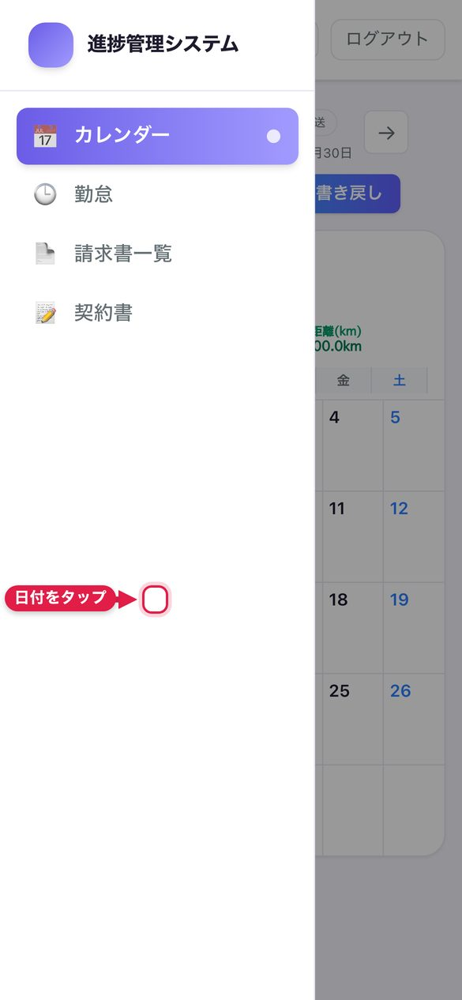
STEP 2 ☑ 稼働 にチェックを入れます（外して保存すると、その日の稼働は削除されます）。

STEP 3 上から順に入力します（下表）。
| 項目 | 入力のしかた |
|---|---|
| 開始時間 ／ 終了時間 | 時刻を選びます。稼働時間は自動計算されます（日をまたぐ場合も対応） |
| 走行距離 (km) | その日の走行距離。小数点1桁まで入力できます |
| 備考欄 | 連絡事項・特記事項。高速代・駐車場代の内訳など |
| 配送件数 (件) | その日の配送件数 |
| 開始メーター ／ 終了メーター | 📷 メーターを撮影 で写真を撮ると数値が自動で入ります（6-1） |
| 実費レシート（ガソリン代） | 📷 レシートを撮影して金額を自動入力 で金額が自動で入ります（6-2） |
| 実費合計 (円) | レシートの金額が自動で合算されます。必要なら手で直せます |
STEP 4 保存 を押します。「稼働報告を保存しました」と出れば完了です。
保存した内容は 🕒 勤怠 にそのまま連携されます（開始/終了時間・走行距離・配送件数は稼働報告書の表へ、実費レシートは「立替金」へ1枚1件で。7章）。勤怠側で入れ直す必要はありません。後から直すときは同じ日付をタップして修正し、もう一度 保存 を押します。
5-2. 月の集計を見る
- カレンダー上部に 月度稼働日数(日)・稼働時間(h)・時間外(h)・走行距離(km) が表示されます（1日〜末日）。
- ← → で前月・翌月に移動します。
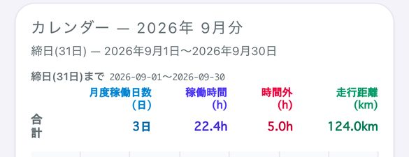
6. 写真から自動で入力する（メーター・レシート）
メーターとガソリン代は、写真を撮るだけでAIが数値を読み取り、そのまま欄に入ります。手打ちは不要です。
6-1. メーターを写真で読み取る
STEP 1 「開始メーター (km)」の 📷 メーターを撮影 を押し、カメラで撮影します（写真の選択も可）。
STEP 2 「🤖 AI読取中…」と表示され、数秒で数値が入ります。違っていれば直します。

STEP 3 終了時も「終了メーター (km)」を撮影します。
写真を添付するまで数値は入力できません。✕ を押すと数値も消えます。終了メーターが開始より小さいと保存できません。
6-2. ガソリン代などのレシートを読み取る
STEP 1 「実費レシート（ガソリン代）」の 📷 レシートを撮影して金額を自動入力 を押し、撮影します。
STEP 2 1枚ごとに金額欄が増え、AIが読み取った税込額が入ります。違えば直し、不要な行は ✕ で消します。

STEP 3 「実費合計 (円)」に合計が自動で入ります。
保存すると 🕒 勤怠 に自動で反映されます。① カレンダーで入れた開始/終了時間はそのまま稼働報告書の表に入り（7章）、② レシートの実費は「立替金」に1枚1件で積み上がります。月末はその合計がそのまま立替金の申請額になります（8章）。
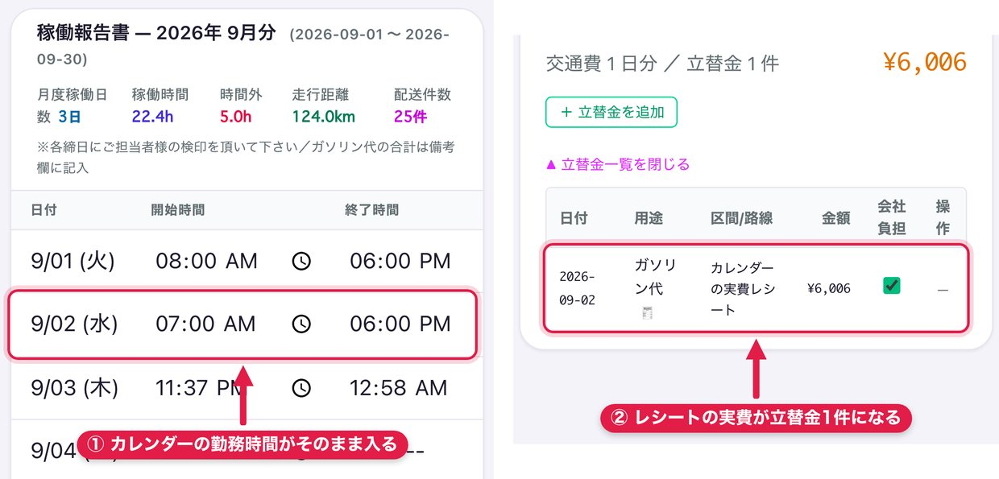
レシートは1日に何枚でも追加できます。高速代・駐車場代も同じ手順で入れられます。
7. 勤怠画面で1か月分を確認する
メニューの 🕒 勤怠 は、カレンダーの1か月分を表で見る画面です。同じデータで、どちらで直しても反映されます。
STEP 1 上部の ← → で月を切り替えます。「期間: ○月1日 〜 ○月末日」が出ます。
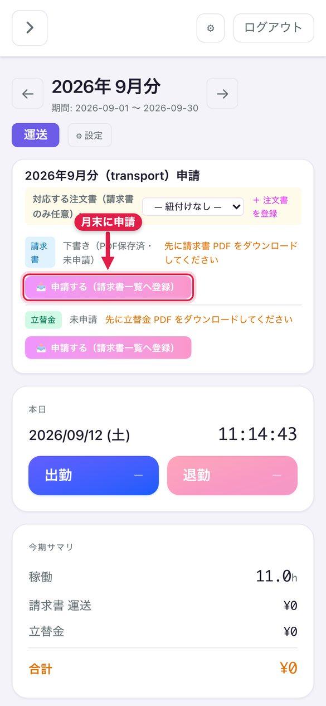
STEP 2 表のセルを直接編集すると自動保存されます（保存直後に ✓、保存済みで ● が出ます）。
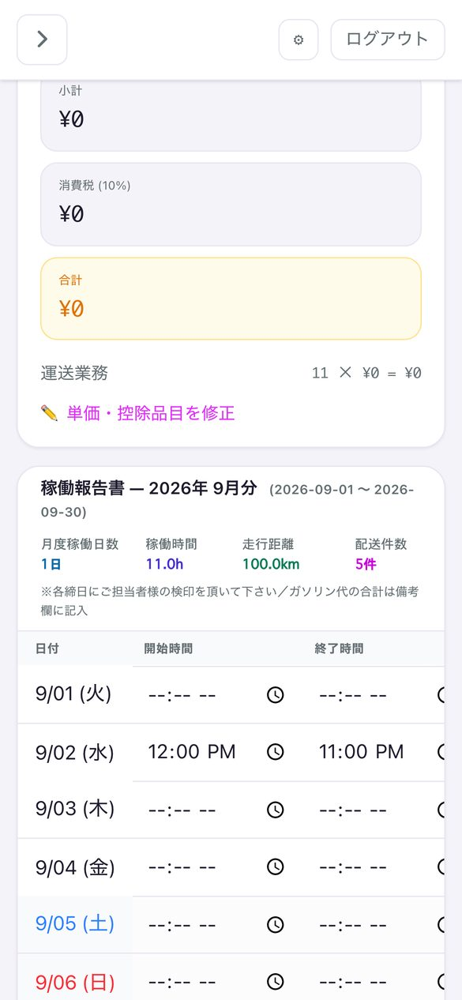
STEP 3 表の下に 稼働日数・稼働時間・時間外・走行距離・配送件数 の合計が出ます（紙の提出は不要）。
スマホでは表が横にスクロールし、日付列は固定されます。1行の全項目を空にすると、その日の稼働は削除されます。
勤怠画面の表では写真は扱えません（数値入力のみ）。写真の読み取りはカレンダー（6章）で行います。
8. 支払明細を申請する
締日（末日）を過ぎたら、その月の支払明細をHAUKUR運送へ申請します。金額は入力した稼働から自動計算されます。
8-1. 申請する
STEP 1 🕒 勤怠 を開き、上部の月が申請したい月になっているか確認します。
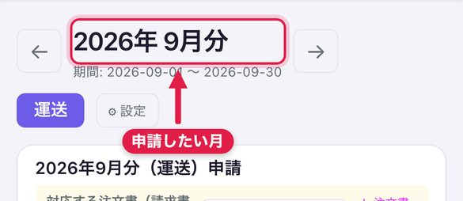
STEP 2 📥 ダウンロード でPDFを開いて内容を確認します（確認するまで申請は押せません）。
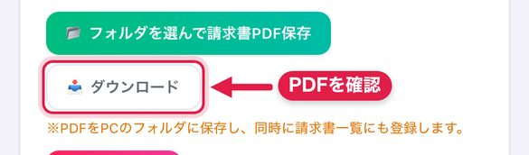
STEP 3 📤 申請する（請求書一覧へ登録） を押すと「申請中」で登録されます。
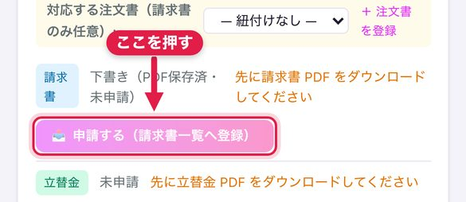
STEP 4 直して出し直すときは 🔁 再申請、取り下げるときは ↩ 取消 を押します。
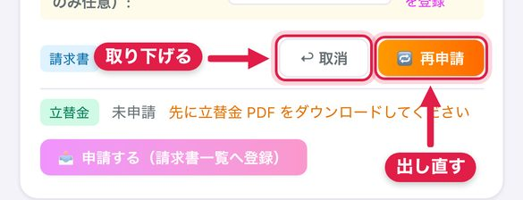
ガソリン代などの実費は「立替金」として、支払明細とは別に申請します。どちらも同じ手順です。
8-2. 状態を確認する
| 状態 | 意味 | できること |
|---|---|---|
| 下書き | まだ申請していない | 編集・削除・申請 |
| 申請中 | HAUKUR運送の確認待ち | 取消して直す |
| 承認済 | 内容が承認された | 内容の確認のみ |
| 却下 | 差し戻し。直して出し直す | 再申請 |
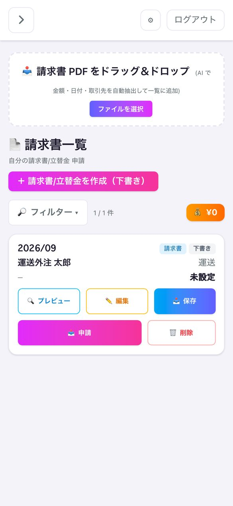
9. 契約書に署名する
業務委託契約書はHAUKUR運送からメールで届きます。ログインは不要で、スマホの画面上で署名できます。
STEP 1 メールの署名URLを開きます（30日以内）。
STEP 2 契約書の内容を最後まで確認します。
STEP 3 「署名者名」を入力して署名し、2つの同意にチェックして 署名して送信 を押します。
STEP 4 署名済みPDFが作られ、メニューの 📝 契約書 からいつでも確認できます。
📧 届くメール 件名：【運送業務委託契約書】ご署名のお願い
お名前 様 お世話になっております。HAUKUR運送の西野 雄太郎です。 運送業務委託契約書をお送りいたします。 下記のリンクから内容をご確認のうえ、ご署名をお願いいたします。 署名URL
黄色の部分は契約書の内容によって変わります。本文はHAUKUR運送が編集できます。
「この契約書は無効になっています」と出たら、作り直されています。HAUKUR運送に最新のリンクを依頼してください。
10. よくある質問・困ったとき
| こんなとき | こうしてください |
|---|---|
| 招待メールが届かない | 迷惑メールフォルダを確認し、無ければHAUKUR運送に再送を依頼してください。 |
| パスワードを忘れた | 再設定画面はありません。HAUKUR運送にご連絡ください。 |
| 「Google でログイン」が失敗する | この方法は事前に許可されたアドレスだけが使えます。招待メールのリンクで設定したパスワードでログインしてください。 |
| メーターの数値が入力できない | 写真を添付するまで入力できません。先に 📷 メーターを撮影 を押してください。 |
| AIが読み取った数値が違う | 数値欄をタップして手で直せます。直した数値が保存されます。 |
| 終了メーターが保存できない | 開始メーターより小さい値は入りません。撮り直すか数値を直してください。 |
| 申請ボタンが押せない | 先にPDFをダウンロードして内容を確認してください。 |
| 申請を取り消したい | 「申請中」なら ↩ 取消 で下書きに戻せます。 |
| 事故・荷物破損・誤配・遅延などが起きた | 別冊「トラブル別対応」の手順どおりに動き、HAUKURへLINEしてください。ヘッダーの 📘 マニュアル からも開けます。 |
| 表が途中で切れて見えない | 稼働報告書の表は横にスクロールします。日付の列は固定されています。 |